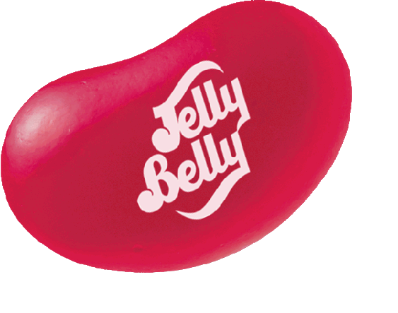
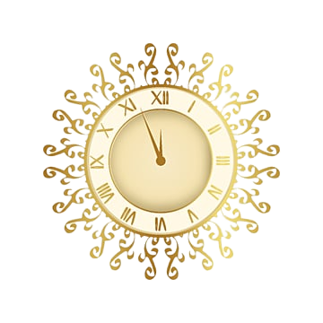
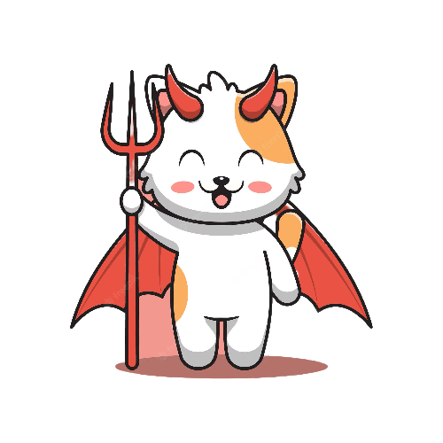
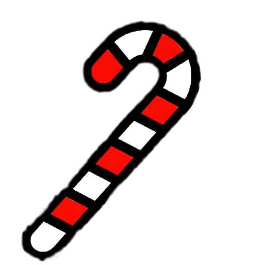
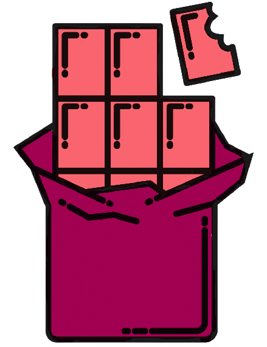
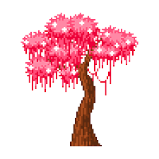

...
Scientists have described the lolmon to look "like an M&M with arms and legs".
Fully grown lolmons are around the size of a human fists. The fur colour of a lolmon
is determined by their favourite type of candy. For example, a lolmon whose favourite
candy is grape lollipop will have purple fur and a lolmon whose favourite food is dark chocolate
will have dark brown coloured fur.

Lolmon Children
...
Infant lolmons are around the size of a large jellybean,
which unfortunately means that many younger lolmons are
stepped on and squished every year. Our official reports
say that approximately 30% of infant lolmons don't make it
past their first year.
Transportation
...
Due to the very circular shape of their body,
the lolmons primary mode of transportation is
tucking their arms and legs very close to their
body and then rolling to where they need to go.

Energy Levels
...
The lolmon do not require much sleep to function. They all get transported to their beds
and go to sleep for exactly one hour (between 11:30pm and 12:30am)

Predators
...
Until recently, the lolmons had no predators. However, as of now,
the catvils have essentially destroyed the lolmon community by stealing
keyruncy boxes.

Shared Hatred
...
As of recent because of the thieving catvils, now most,
if not all lolmons despise candy canes because the red
and white colours resemble the fur of a catvil. As a result,
candy canes are now no longer sold in supermarkets in lollyland.
Habitat
...
The only place where lolmon are known to live is lollyland. The lolmon
all live in ice cream houses created as a result
of the volcanic eruption that created lollyland.

Favourite Food
...
The lolmon's diet consists of sugary goodies of any type (excluding candy canes, of course!).
Although each lolmon has different favourite sweets, many lolmons are especially
appreciative if someone buys them ruby chocolate because of its expensive price value.

Ancient Myth
...
Lolmon's believe that the first lolmons ever came from trees because
nature is often used to describe life.